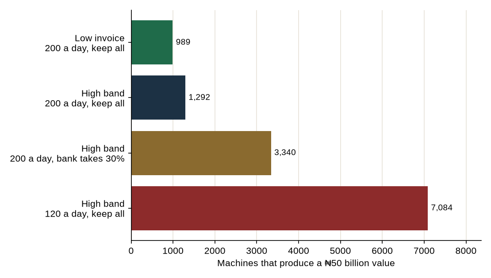
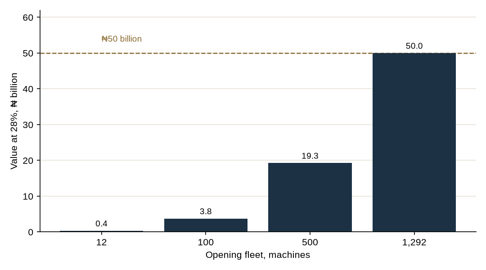

Feasibility study · October 2026
₦50 billion is a value, not a sales target and not revenue. One opening fleet reaches it without taking a sixth of the country’s ATM withdrawals. The cheque for that fleet is ₦30.23 billion, and it is written only after a 12-machine count.
The path. Keep every naira of the ₦500 off-site cap. Count 200 other-bank withdrawals a day. Open about 1,292 high-band machines together, at a landed cost of ₦23.72 million each. That fleet’s cash profit is ₦27.32 billion a year and its value at 28% is ₦50 billion. Those withdrawals are 5.4% of Nigeria’s recent daily ATM total. A 70/30 split at 120 a day never gets there. A human booth network and a cash-in kiosk do not get there on any site stock that has been counted. Retained cash from 12 machines does not get there inside seven years.
The figure in the brief is enterprise value. No Nigerian ATM-operator sale multiple was found, so none is used. Value here is the present value, at 28%, of seven years of cash profit, after the opening cheque and after the head office. The 28% is the policy rate of 23% plus five percentage points, the same hurdle as the earlier papers. Salvage at year 7 is zero. Tax is not in the sum. Volume is flat.
Seven years of ₦1 at 28% are worth 2.94. The annual cash profit that has a present value of ₦50 billion, before counting the cheque, is ₦17.02bn. A perpetuity at 28% would need ₦14.00bn a year. Both are hurdles. The tables below include the cheque, so a row that “reaches” is a fleet whose value, net of the money that built it, clears ₦50 billion.
The high band is the v5 listing: ex-works US$7,850 plus the published US$1,800 customisation stand-in, landed at ₦23.72m. The low band is the other end of that listing, ex-works US$3,650, landed at ₦14.59m. It is not the Hongzhou price from the earlier addendum. Street cost on the high band is ₦5.78m a year. The bank carries the cash and the cash-in-transit, as in v5. Effective days are 270. One counted withdrawal is one ₦20,000 block at the ₦500 cap. The ₦100 is not CashEase income. On-us withdrawals pay nothing.
At a 70/30 split the high band still covers cash costs at about 61 withdrawals a day and full cost at about 97. That is a machine that can trade. It is not, by itself, a machine that is worth ₦50 billion.

| Plan | Machines | Opening cheque | Cash profit a year | Share of ATM withdrawals | Return |
|---|---|---|---|---|---|
| 200 a day, keep all, high band | 1,292 | ₦30.23bn | ₦27.32bn | 5.4% | 89.3% |
| 200 a day, keep all, low invoice | 989 | ₦14.12bn | ₦21.83bn | 4.2% | 154.4% |
| 120 a day, two blocks, keep all | 917 | ₦21.47bn | ₦24.34bn | 2.3% | 112.8% |
| 200 a day, bank takes 30% | 3,340 | ₦78.09bn | ₦43.61bn | 14.1% | 53.0% |
| 120 a day, keep all, high band | 7,084 | ₦165.57bn | ₦73.40bn | 17.9% | 40.2% |
| 120 a day, bank takes 30% | Does not reach | — | — | — | — |
| 200 a day, split 50/50 | Does not reach | — | — | — | — |
Read the table as a filter. Keeping the whole surcharge and doing 200 other-bank withdrawals a day is the plan this paper will walk. Giving the bank 30% still reaches, and it needs 3,340 machines and 14.1% of national withdrawals, on a cheque of ₦78.09bn. Giving the bank half, even at 200 a day, does not reach inside the search. A 70/30 split at 120 a day does not reach at any fleet up to 40,000 machines, because each machine’s value is negative and more of them make it worse.
Open 1,292 high-band machines on day one, after a count, not before it. Each does 200 paying withdrawals. CashEase keeps ₦500 on each. The opening cheque is ₦30.23bn. Cash profit after the office is ₦27.32bn a year. The value at 28% is ₦50.01bn. The return is 89.3%. Payback is 1.1 years. The 200 withdrawals, times 1,292 machines, are 5.4% of the country’s recent daily ATM withdrawals. That is about one withdrawal in eighteen. They have to be other banks’ cards. The sponsor’s own cards pay zero if the machine is branded for them.
The same shape on the low invoice is 989 machines, a cheque of ₦14.12bn, cash profit of ₦21.83bn, and 4.2% of national withdrawals. Chase that proforma. Do not average it with the high band, and do not spend the high-band cheque if the invoice comes in at the low band.

| Opening fleet | Cheque | Cash profit a year | Value at 28% | Return |
|---|---|---|---|---|
| 12 | ₦320.91m | ₦228.98m | ₦351.61m | 69.6% |
| 100 | ₦2.38bn | ₦2.09bn | ₦3.77bn | 86.9% |
| 500 | ₦11.72bn | ₦10.56bn | ₦19.28bn | 89.0% |
| 1,292 | ₦30.23bn | ₦27.32bn | ₦50.01bn | 89.3% |
Twelve machines are already a business if they truly do 200 a day: cheque ₦320.91m, cash profit ₦228.98m, value ₦351.61m, return 69.6%. One hundred machines are worth ₦3.77bn. Five hundred are worth ₦19.28bn. The ₦50 billion appears at 1,292. Stopping at 500 is a ₦19 billion company. That is a choice. It is not the brief.
No station, mall, park or market has a published count of other-bank withdrawals. The 200 a day is the rate the plan needs, not a rate a forecourt has reported. The site stocks that can hold a fleet of this size are the filling stations. NMDPRA counts about 22,681 registered retail outlets. MEMAN’s members, a subset, are 3,293, of which 1,392 are in the South West and 529 in the North Central. 1,292 machines are about 6% of the regulator’s outlets and about two-thirds of the South West plus Abuja member stations. The machines go only where a visit shows there is no bank ATM already dispensing, and only where the 90-day count holds.
Malls stay a two-site test. Ikeja, The Palms and Jabi have owner crowd figures large enough that 200 withdrawals is a small share of the people, and those malls already name banks or supermarket anchors. Parks and markets are not machine sites in this plan. A recycler at Ojota is still a guess.
The average existing ATM, mixing the 16,714 active machines of the first half of 2024 with the first-half 2025 volumes, does about 284 withdrawals a day of every kind of card. Two hundred paying withdrawals is inside that average only if most of the traffic is another bank’s card. A site that already has the landlord bank’s ATM will not look like that.
The twelve-machine proof is equity of ₦320.91m. The step from a passed proof to the ₦50 billion fleet is a further raise, not retained profit. Cash swept into new machines, with no dividend and no new equity, grows a 12-machine fleet to 917 machines by year 7. The value of that sweep, on the same seven-year clock and with no resale at the end, is -₦277.34m. The late machines are bought with cash that then has no years left to earn. Reinvestment is the wrong engine for this target.
So the raise, once the count is in, is the opening cheque of the fleet you actually intend to run. A founder who will live with 100 machines raises ₦2.38bn. A founder who wants the ₦50 billion raises ₦30.23bn. No vendor-finance rate was found. Borrowing at the 23% policy rate was priced in v5 and is not a new source of value here. The bank does not take a share of the surcharge in this plan. The bank supplies the licence, the cash and the transit. In return the machines sit on its name. Whether those machines count toward the issuer’s duty of one ATM per 7,500 cards is a question for counsel. The circular, as reported, tells each issuer to deploy. It does not say a third party’s machine counts.
If counsel says they do not count, the bank has a weaker reason to give away the whole surcharge. The fallback that still hits ₦50 billion is the 70/30 row: 3,340 machines, cheque ₦78.09bn, 14.1% of national withdrawals. This paper does not prefer it. A 50/50 term sheet does not have a fleet that reaches.
CashEase can sign the forecourt and let the card issuer own the ATM. Income is then an annual fee, not the ₦500. The cost of papering a site is an assumption of ₦50,000. Watching it is an assumption of ₦20,000 a year. The office assumptions are unchanged. There is no machine to depreciate. The fee that produces a ₦50 billion value is:
| Paying sites | Annual fee that hits ₦50 billion | Cheque to open the book |
|---|---|---|
| 100 | Does not reach, even at ₦50m a site | — |
| 500 | ₦34.16m | ₦65.00m |
| 1,000 | ₦17.10m | ₦90.00m |
| 3,293 (all MEMAN members) | ₦5.22m | ₦204.65m |
| 5,000 | ₦3.45m | ₦290.00m |
| 10,000 | ₦1.74m | ₦540.00m |
A fee near the v5 rent assumption of ₦1.80 million a year, paid the other way, is worth the following. These rows use ₦1.80 million exactly.
| Sites paying ₦1.80m a year | Cash profit | Value at 28% |
|---|---|---|
| 100 | ₦153.00m | ₦404.36m |
| 500 | ₦865.00m | ₦2.48bn |
| 1,392 (MEMAN South West) | ₦2.45bn | ₦7.09bn |
| 3,293 (all MEMAN members) | ₦5.84bn | ₦16.94bn |
| 10,000 | ₦17.77bn | ₦51.67bn |
Ten thousand sites at that rent clear ₦50 billion, on a cheque of about ₦540.00m. Nobody has signed ten thousand sites. The whole MEMAN network at the same rent is worth ₦16.94bn, not ₦50 billion. The useful version of this strategy is smaller: paper the forecourts the proof will need, and either put CashEase’s own machine there or offer the pad to one issuer. Do not add the pad value on top of the machine value. A site earns once.
The 2028 rule does not, on the figures found, force a national rush of new ATMs. Sixteen thousand seven hundred and fourteen active ATMs already cover 125,355,000 cards at one ATM per 7,500. CBN has spoken of more than 12 million contactless cards. NIBSS has spoken of more than one million AfriGO cards. Both sit far below 125 million. The rule binds each issuer, and no issuer’s card stock was published in the sources read, so the number of ATMs the rule still requires is not computed. Pads are a sales list, not a quota.
The brief’s human change point takes a franchise fee of ₦150,000 to ₦300,000 and splits the change fee 70% attendant, 20% CashEase, 10% host. The change fee used here is the ₦100 assumption, and the fee used in the value sum is the top of the range, ₦300,000. At 120 changes a day, CashEase’s 20% is ₦648,000 a year per booth.
| Changes a day | Booths whose value hits ₦50 billion |
|---|---|
| 60 | 40,040 |
| 120 | 22,746 |
| 200 | 14,434 |
Lagos has 30 registered interstate parks. At 120 changes a day and a ₦300,000 fee, that book’s value is -₦47.33m. The cash profit does not cover the office. The 2017 count of 145 Lagos inter-state parks, at the same rate, is worth ₦206.04m. That is a small company. It is not a path to ₦50 billion. Twenty-two thousand booths would be. No park census holds them, and putting a change booth on a fuel forecourt is a fire and a theft problem, not a shortcut. Run the Lagos booths as their own test. Leave them out of the ₦50 billion sum.
The cash-in kiosk is not a third door. On the v5 commission stack it takes in ₦378,000 a year and loses about ₦2.29 million of cash against street costs of about ₦2.67 million. Adding sites adds losses.
The base plan charges ₦500 once per withdrawal. The circular is written per ₦20,000. EFInA’s explainer says “per ₦20,000” in the worked lines and “per transaction” in one sentence. Nairametrics reported a CBN clarification that the ₦100 applies whether or not the withdrawal reaches ₦20,000. The average ATM ticket in the first half of 2025, ₦36.34 trillion divided by 858.80 million transactions, is about ₦42,315. That ticket covers two full ₦20,000 blocks.
If counsel confirms that the ₦500 cap stacks, and if these machines match that average ticket, then 120 withdrawals a day at two blocks behave like the row in the first table: 917 machines, cheque ₦21.47bn, 2.3% of national withdrawals, return 112.8%. That row is not the cheque this paper asks anyone to raise. It is the reason to ask the lawyer the question before the term sheet is signed.
Month 1. Counsel writes two answers: the machines can sit under the sponsor’s licence as off-site ATMs, and whether they count toward that issuer’s one-per-7,500 duty. The term sheet asks for 100% of the surcharge, the bank carrying cash and transit. A 70/30 sheet is filed only as the fallback in section 6. A 50/50 sheet is refused.
Month 2. Visit Lagos and Abuja forecourts. Keep a station only if no bank ATM is already dispensing. Ask one mall landlord, in writing, whether an anchor bank already holds the ATM right. Paper those pads. Do not pay a host a share that has not been written down.
Months 3 and 4. Proforma against the high band and the low band. NIBSS device and application fees, once. No shipment before the certificates.
Months 5 to 8. Install 12 high-band machines, ten stations and two malls, cheque ₦320.91m. Publish the weekly count of paying withdrawals, separate from the sponsor’s own cards.
Months 9 to 12. Decide. A median of 200 paying withdrawals opens the raise for the next fleet, first 100 machines if the median is holding, and the 1,292 only when the raise is subscribed. A median of 120, with 100% of the surcharge, is a small fleet worth keeping and not a reason to order 7,084 machines. Anything below the full-cost line of the signed split is a stop. Kiosks stay off the order. Booths, if tried, stay inside the Lagos register and outside this value.
Machine costs, the 270-day year, the ₦500, the office (₦40 million plus ₦150,000 a machine at the start; ₦25 million plus ₦50,000 a machine a year) and the 28% hurdle are read from the v5 results, not rebuilt. National daily withdrawals = 858,800,000 / 181. Cards the current ATM stock already covers = 16,714 × 7,500. A fleet reaches when its present value is at least ₦50 billion. The search stops at 40,000 machines. Two blocks mean the cap is applied twice to one withdrawal. The pad fee solves the same present-value test. Reinvestment buys the next machine at the subsequent-unit price plus ₦150,000, and the unsold fleet is worth nothing at year 7. Recompute from model/path_model.py.
End of study. Earlier CashEase files are unchanged. The 200 withdrawals a day are the rate this value needs. They are not a count from a Nigerian forecourt.